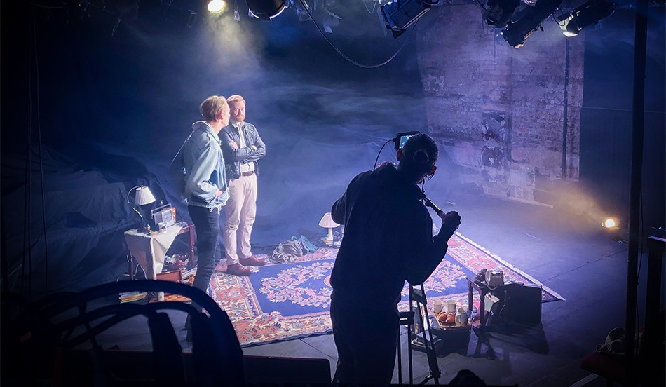

We feel honoured to continue to work on such inspiring cultural projects and wanted to recommend some online events this month to keep you going until June!
The Race to Save The World
The Race To Save The World - Official Trailer from Joe Gantz on Vimeo.
We are very excited to be working with Emmy-winning filmmaker Joe Gantz on his latest documentary The Race To Save The World. Coming out tomorrow on Earth Day Day, the film illuminates the human stories in the fight for climate action. Rather than focusing on scary statistics and abstract predictions, it follows a range of environmental campaigners, of all ages, who are prepared to sacrifice everything in order to protect the planet. Encompassing protests and arrests, courtroom drama and family turmoil, the film offers an intimate portrait of the lives of these individuals as they push to create a more sustainable world, often risking their relationships, careers – and freedoms. Buy tickets here.
We're also thrilled that to organise a virtual run of the film at the Barbican next month. The Race to Save The World seeks to harness the spirit of the first Earth Day in 1970, which saw 20 million Americans take to the streets and prompted Richard Nixon to take action on climate issues. You can listen to an inspiring interview with contributors Bill Moyer, Abby Brockway and Michael Foster, alongside filmmaker Joe Gantz on Extinction Rebellion's very own Rebel Radio here.
Plays on Film at The King's Head Theatre
The King's Head Theatre's first ever digital on-demand season has launched. Plays on Film brings together five smash-hit shows from some of the UK's most exciting theatre makers, and combines the raw immediacy of live performance with high definition cinematography.
Filmed on location at the King's Head Theatre, Islington, by the award-winning Shoot Media, the shows will be available to watch on the venue's new on demand platform, KHTV, from anywhere in the world, ensuring every seat is the best in the house. Over 50% of ticket sales will go directly to the artists and companies involved at this difficult time for freelancers across the entertainment industry.
The programme includes JEW...ish, a quickfire romantic comedy exploring sex, polamory and Jewish identity; Vespertilio, an atmospheric tale of love, loneliness, bats and the unlikely connection between two gay men; Sacrament; a powerfully funny monologue about a young Irish Catholic woman questioning her sexuality; I Wish My Life Were Like A Musical, a sparkling revue show about the tumultuous world of musical theatre, on stage and off; and Illusions of Liberty, a searing exploration of invisible illness against the backdrop of a deeply 'hostile environment'. Buy tickets here.
Union Chapel
Ethical arts venue, Union Chapel in Islington, have recently been working with eight inspiring members of the local community and Katy Rubin, an artist and participatory democracy practitioner. The group has been using the transformative creative tool of Legislative Theatre to explore and address a mix of social justice issues that have affected them, including housing and mental health services and sexism in the cultural sector to bring about changes in services on the ground over the next few months. Profits from venue go into The Margins Project – which has kept running all year – for people with lived experience of homelessness. Everyone was really touched when, at the end of last year, Max Porter did a reading of his brilliant novel Grief is the Thing with Feathers in aid of The Margins Project. It's so exciting that Union Chapel is reopening with its first live, socially distanced gig on July 6 with Celeste. CEO Michael Chandler was recently on BBC London's Robert Elms show alongside The King's Head's Programme Director Heather Ruck discussing what coming out of lockdown means to them.